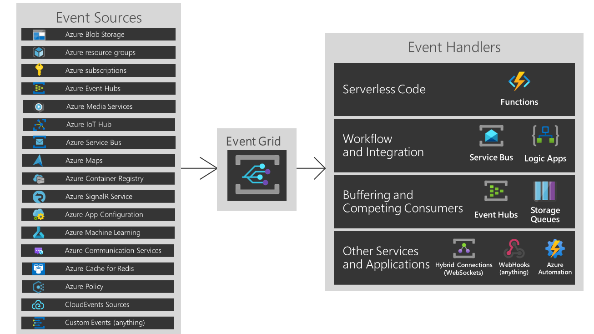
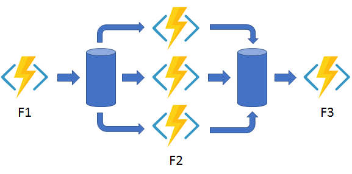
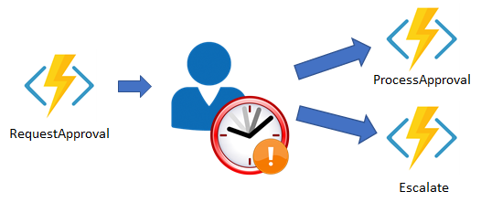
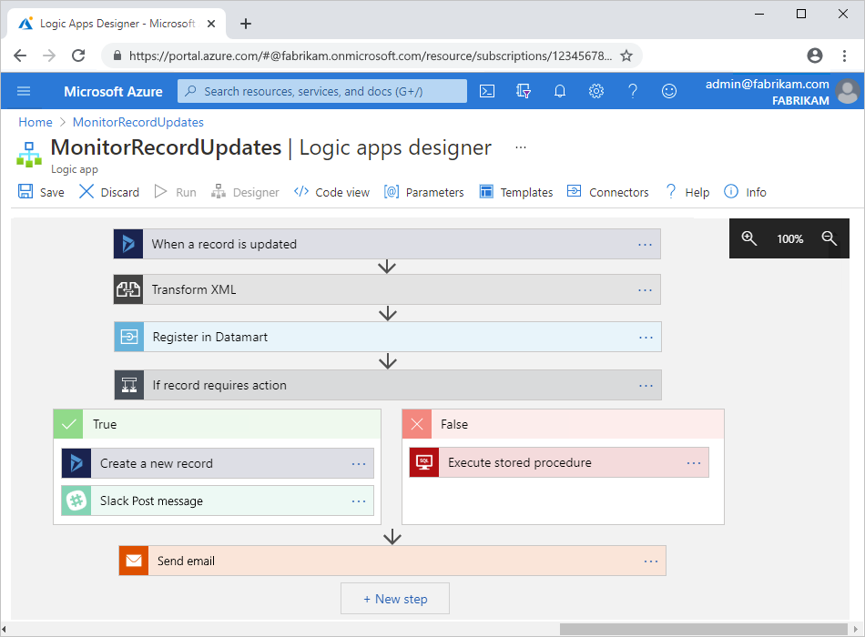

Azure Integration Services
Charles Stacy Harris III
Message and Event Patterns
- Load Leveling
- Load Balancing
- Filtering
- Partitioning
- Scheduled Delivery
- Fan Out
- etc.
Storage Queues

- Part of Azure Storage
- Large storage capacity
- Message size: 64KB
- No ordering guarantee
Azure Service Bus Queues

- Push-Pull semantics
- Ordered and timestamped
- Multiple senders and multiple receivers/consumers
- Consumers compete for messages
- Delivery Guarantee: At-lease once or at-most once
Azure Service Bus Topics

- Push-Pull semantics
- Ordered and timestamped
- Multiple publishers and multiple subscribers
- Multiple subscribers can read the same message
Additional Service Bus Features
- Scheduled Delivery
- Auto Forwarding
- Auto Delete
- Duplicate Detection
- Sessions
- Batching
- Ordering
- Transactions
- Poison Message Handling
Event Hubs

Event Hubs
- Push-Push processing model
- Multiple simultaneous consumers
- Consumers each read via a private cursor
- Consumers each read all of the messages
Event Hub Namespaces

Event Publishing

Event Hubs Partitions

Event Hubs Consumer Groups
Event Hubs Checkpoint

Event Capture

Event Grid

Event Grid
- Dynamically scalable
- Low cost
- Serverless
- At least once delivery of an event
- Available on Edge and Kubernetes
Event Grid Terminology
- Events - What happened.
- Event sources - Where the event took place.
- Topics - The endpoint where publishers send events.
- Event subscriptions - The endpoint or built-in mechanism to route events.
- Event handlers - The app or service reacting to the event.
The following slides are Works in Progress
Azure Functions

Durable Functions
- Extension of Azure Functions
- C#: Compiled class libraries and script
- JavaScript
- Python
- F#: Compiled class libraries and script
- PowerShell
Function Chaining

Fan Out / Fan In

Async HTTP APIs

Monitor

Human Interaction / Approval

Aggregator (Stateful Entities)

Logic Apps

- Connectors
- Triggers
- Actions